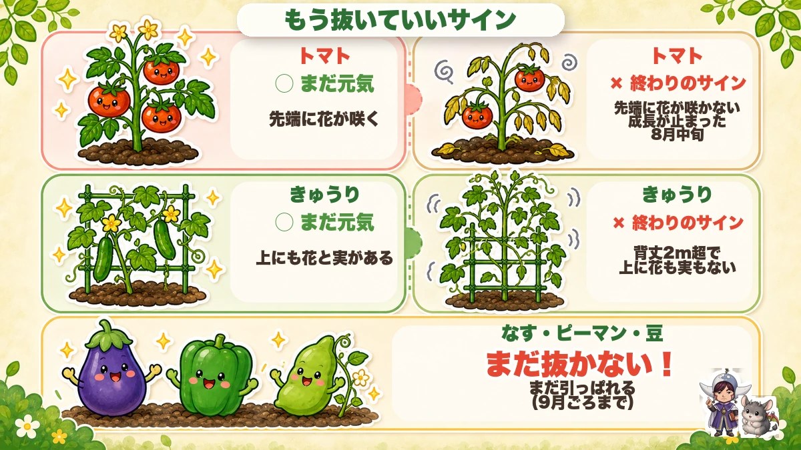
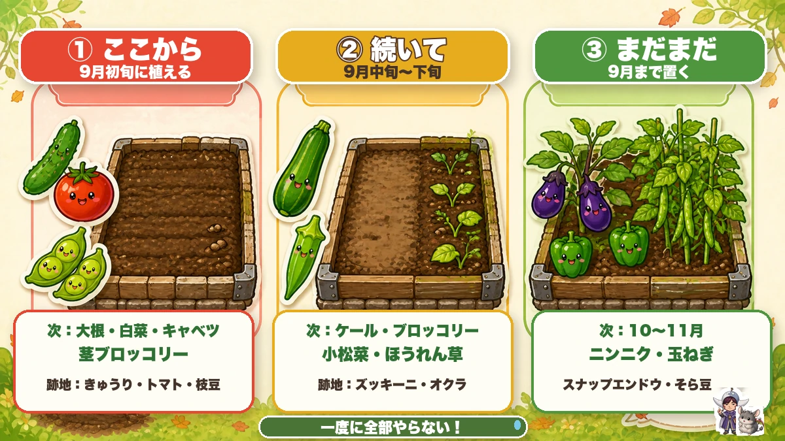
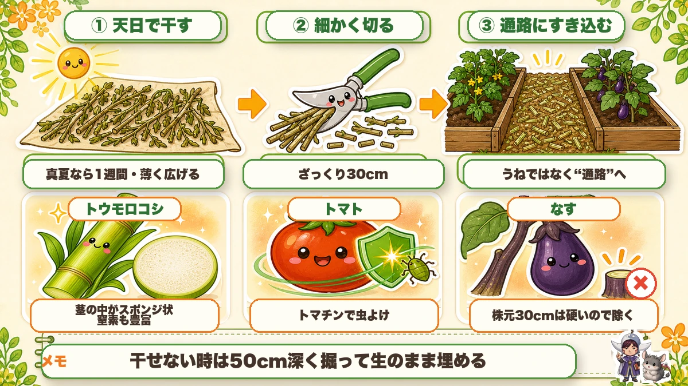
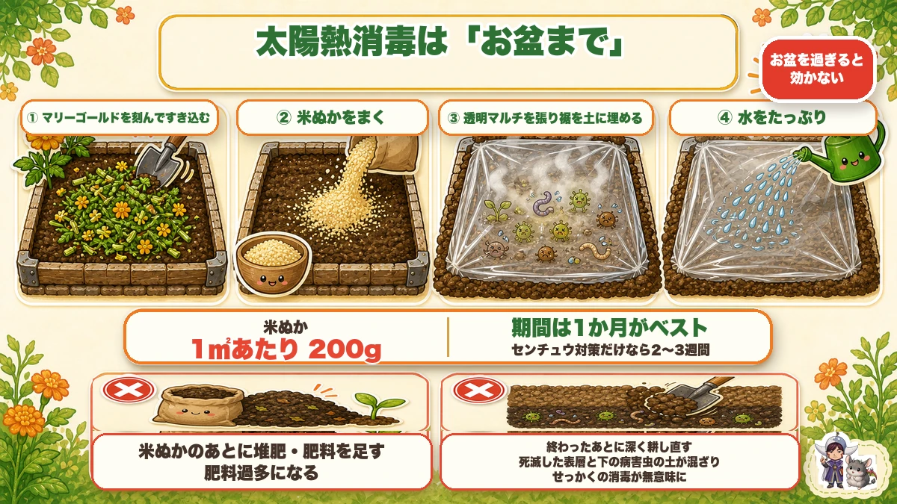
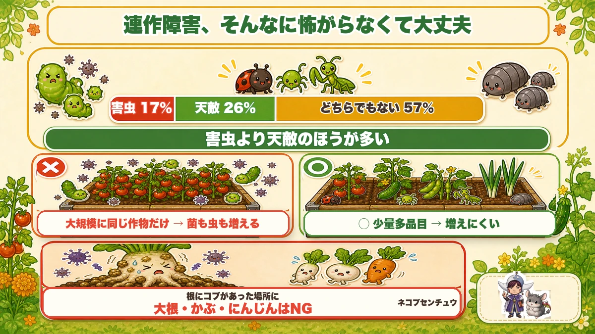
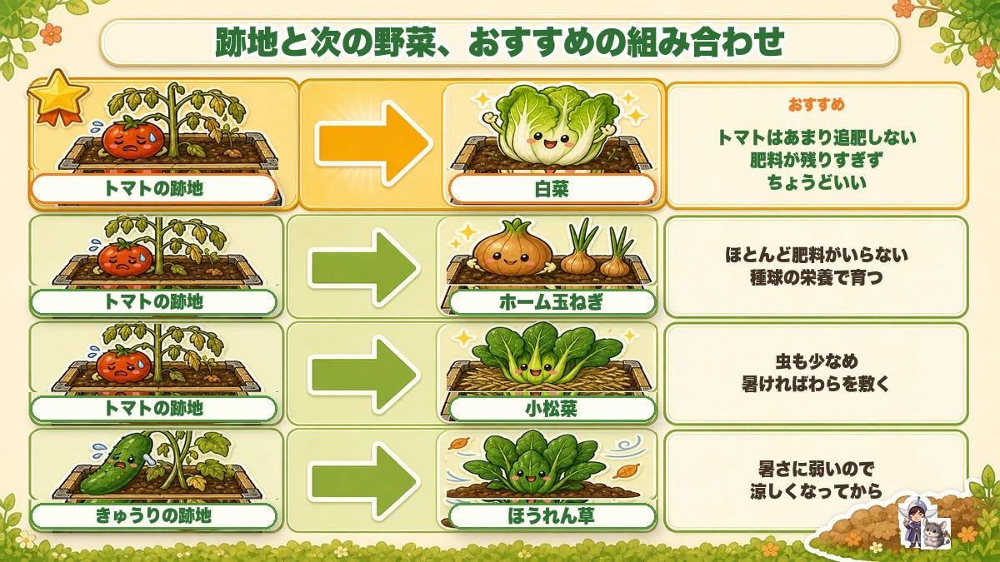
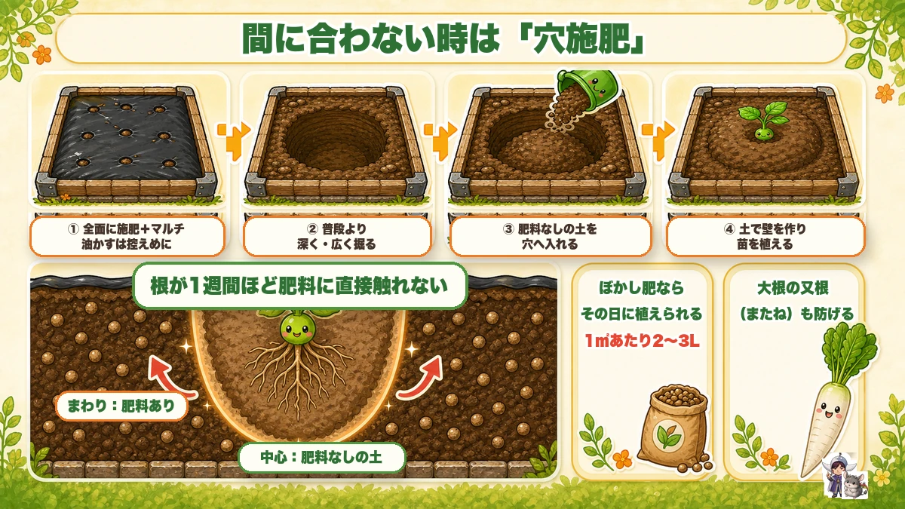

【保存版】夏野菜の店じまい🍂 抜く順番と、秋がラクになる土のリセット3ステップ

🗨️「夏野菜、いつ抜けばいいのか分からない…」
🗨️「暑い中で全部片づけるの、正直しんどい」
🗨️「抜いたあとの土、どうしたらいいの？」
どうも、8150（えいこう）です🌱 家庭菜園歴8年、理科の教員免許を持っていて、有機・無農薬で野菜を育てています。
前回は「8月にまく・植える野菜」をお届けしました。今回はその一歩手前、夏野菜の店じまいの話です。
先に言っておくと、ここは秋冬野菜の出来を半分くらい決めてしまう工程です。でも身構えなくて大丈夫。この記事で覚えて帰ってほしいのは、たったこれだけ。
抜く順番を3つに分けて、抜いた茎は捨てない。
これだけで、体力も土も守れます☺️
この記事は、土のリセットを3ステップで進めます。
- ①片づける（いつ・どの順で抜くか）
- ②抜いた茎を土に返す（捨てずに通路へ）
- ③太陽の熱でリセットする（お盆まで）
最後に「間に合わなかった人」の逃げ道も置いておきます。順番に見ていきましょう。
※以下の時期は中間地（関東〜関西の平野部）が目安。寒い地域は少し遅らせ、暖かい地域は早めに。
📖 この記事の目次
夏野菜、いつ終わりにする？

「まだ実がつくかも」と思って粘ってしまう気持ち、めちゃくちゃ分かります。私も毎年やります。
でも、終わりのサインは意外とはっきり出ています。
トマト：先端に花が咲かなくなったら
トマトは8月中旬でほぼ終わりです。見るのはいちばん上。
先端が伸びているのに花が咲かなくなって、成長も止まってきたら切り替えのサインです。下の葉から傷みはじめ、病気か高温障害で枯れ出したら、そこから復活することはまずありません。
段数で見ても分かります。5段目が赤くなっている頃、7段目は実が小さくてまばら、8段目は花や実そのものが落ちて3〜4個しか残っていない——ここまで来たら潮時です。
きゅうり：背丈2mを超えて、上に何もなくなったら
きゅうりは2mを超えて、上のほうに花も実もない状態になったら撤収です。
上のほうに実がついても、そこまで養分を送るのに株はエネルギーを使い切ってしまって、曲がったものしか採れません。子づるにまだ実がついていれば、そこだけ伸ばしてあげてください。
なす・ピーマン・豆：まだ引っぱれます
この3つは9月ごろまで収穫が続きます。まだ抜かないでください。
判断に迷ったら
私の中の基準はシンプルで、「粘れそうにないなら、無理に引き延ばさず次へ切り替える」です。
粘って2〜3個多く採るより、1週間早く白菜を植えるほうが、12月の食卓は確実に豊かになります。
抜く順番は「ここから・続いて・まだまだ」

ここ、今日いちばん伝えたいところです。
猛暑の中で「よし、今日で全部片づけるぞ」とやると、まず体が持ちません。
去年の8月、私は休みの日に一気にやろうとして、3時間で頭がぼーっとしてきて中断しました。しかもその後1週間、畑に行く気が起きなかったんです。片づけが終わらないから次も植えられない。完全な悪循環でした😇
なのでうね単位で3つに分けます。次に何を植えるかで、順番が自動的に決まります。
①「ここから」＝9月初旬に植えるうね
大根・白菜・キャベツ・茎ブロッコリー・カリフラワー・ロマネスコ・芽キャベツ。
このあたりは早く植えないと大きくなりません。とくにロマネスコみたいな珍しいブロッコリー系と芽キャベツは、遅れると花蕾（からい／食べるつぼみの部分）が小さいまま終わります。
なので、きゅうり・トマト・枝豆など、いま撤去できるところから片づけて、ここに充てます。
②「続いて」＝9月中旬〜下旬のうね
ケール・ブロッコリー・小松菜・ほうれん草。
ブロッコリーは多少遅れても花蕾は大きくなりますし、晩生（おくて）のほうれん草なら10月でもいけます。ズッキーニ・オクラの跡地あたりが候補です。
③「まだまだ」＝9月まで置いておくうね
ナス・ピーマン・豆・遅まきのトウモロコシ。
ここはまだ収穫が続くので、そのままでOK。10〜11月に植えるニンニク・スナップエンドウ・玉ねぎ・そら豆のために取っておきます。
この3分割、たった1回紙に書くだけです。それで「今日はどこをやるんだっけ」が消えます。
茎を切るときは、太い株でもスパッといける切れ味のいいハサミがあると作業が全然ちがいます。


撤去の手順（ここは雑でいいところと、丁寧にやるところがある）
順番はこうです。
①茎元でカット → ②支柱を抜く → ③根を取り出す
いきなり株を引っこ抜こうとすると、めちゃくちゃ力が要ります。先に茎を切ってしまうと、驚くほどラクです。
根は全部取らなくていい
太い根だけ取って、細い根はそのまま残してOKです。分解して養分になります。
ただし抜くとき、根にボコボコしたコブがないかだけ見てください。あればネコブセンチュウという小さな虫の被害です。ここは後で大事になるので、覚えておいてください。
病気の株だけは、畑の外へ
葉に斑点が出ていた、しおれて枯れた——そういう株は土に残さず、袋に入れて畑の外に持ち出します。元気な株にうつす危険があります。
残渣（ざんさ／片づけた茎や葉）置き場があるなら、そこでしっかり分解させてください。発酵の熱が出れば、カビの菌はある程度死にます。
茎は「ざっくり30cm」に切る
これは雑でいいところ。30cmくらいのざく切りで十分です。
むしろ細かくしすぎると、密集して空気の隙間がなくなって、かえって分解が遅くなります。切れ味のいいハサミを使うと作業が全然違いますよ。
最後に、通路も耕す
夏のあいだ人が歩き続けた通路は、けっこうカチカチになっています。うねだけでなく通路も耕しておくと、次の野菜の根が伸びる範囲が広がります。
★抜いた茎、捨てないでください

ここが今日いちばんお得な話かもしれません。
片づけた茎や葉、ゴミとして出していませんか？ あれ、秋冬野菜のための水はけ改善材になります。
なぜ水はけが大事なのか
秋冬は台風と長雨の季節です。9月10月に雨が続くと、根が水に浸かって根腐れを起こしたり、病気に感染したりします。
私は一昨年、9月の長雨で白菜を半分ダメにしました。畑の低いところがずっと水たまりみたいになっていて、根が真っ黒でした。あれは効きました…。
やり方は3ステップ
- ①天日で干す…真夏なら1週間でカラカラになります。薄く広げて、隙間をあけて干してください。分厚く積むと乾きません。雨が続く時期は避けます
- ②細かくカットする…長いまますき込むと、分解にものすごく時間がかかります
- ③通路にたっぷりすき込む…うねではなく通路です。ここに入れると、水はけと通気性の両方が良くなって、畑全体の微生物も増えます
干すスペースがない方は、生のまま50cmほど深く掘って埋めてください。浅いところに入れると、分解のときに秋冬野菜の根張りを邪魔します。
使うならこの3つがベスト
- トウモロコシ…茎の中がスポンジ状になっていて、入れると隙間ができます。窒素分も豊富で秋冬野菜向き。個人的にはこれが一番
- トマト…茎が太いので隙間ができます。トマトの茎にはトマチンという物質が含まれていて、アブラムシやヨトウムシを寄せつけにくいと言われています
- なす…夏野菜でいちばん茎が硬い。ただし株元から30cmは木みたいに硬いので、そこは除いて上のほうだけ。分解が遅いぶん、じわじわ長く効きます
きゅうり・ゴーヤ・スイカも使えます。米ぬかや土をかぶせておくと分解が早まりますよ。
一昨年、私はトマトの茎を長いまま埋めて失敗しました。11月に掘り返したらまだ原型のまま残っていて、白菜の根がそれを避けて伸びていたんです。乾かして切る、この2手間はサボらないほうがいいです😅
太陽熱消毒は「お盆まで」

「消毒」と言いますが、実際は土壌改良の一種です。夏の高温で、雑草のタネ・害虫の卵・病原菌を減らします。
お盆を過ぎると気温が下がって効きが悪くなるので、やるなら今です。
手順と、押さえたい数字
- マリーゴールドを刻んですき込む：センチュウを寄せつけない効果があります。花・葉・茎ぜんぶに効くので、花柄摘みで出たものも捨てずに使えます
- 米ぬかは1㎡あたり200g：生ぬかがベストですが、いりぬかでも大丈夫
- 透明マルチを張り、裾を土に埋める
- 水はたっぷり：ジョウロやバケツで、しみ込まなくなるくらいまで。雨予報が多いなら控えめでOK
- 期間は1か月がベスト。センチュウ対策だけなら2〜3週間でも効果はあります
- 通路ごとまとめて張ると、うね間の土まで良くなります
うまくいっていると、数時間でマルチの内側が白く曇ってきます。中は蒸し風呂状態です。張った部分だけ雑草が出てこないのが目に見えて分かって、これがけっこう気持ちいい🌞
夏にやると雑草のタネそのものが焼けます。秋や春だと、逆にマルチの中がぬくぬくで雑草が育ってしまうんですよね。夏限定のワザです。
透明マルチと米ぬか、この2つでできます。マリーゴールドは苗のシーズンにホームセンターで探すのが早いです。
![[商品価格に関しましては、リンクが作成された時点と現時点で情報が変更されている場合がございます。]](https://hbb.afl.rakuten.co.jp/hgb/5676ec31.2582035e.5676ec32.c4887243/?me_id=1296241&item_id=10004946&pc=https%3A%2F%2Fthumbnail.image.rakuten.co.jp%2F%400_mall%2Fotentosan%2Fcabinet%2Fimg%2Fgoods02%2Fmulti%2Ftoumei-multi_pb.jpg%3F_ex%3D240x240&s=240x240&t=picttext "[商品価格に関しましては、リンクが作成された時点と現時点で情報が変更されている場合がございます。]")
![[商品価格に関しましては、リンクが作成された時点と現時点で情報が変更されている場合がございます。]](https://hbb.afl.rakuten.co.jp/hgb/565b770c.0e767ab7.565b770f.2286fabc/?me_id=1245791&item_id=10001139&pc=https%3A%2F%2Fthumbnail.image.rakuten.co.jp%2F%400_mall%2Figamai-tominaga%2Fcabinet%2Fkome%2Fimgrc0133415879.jpg%3F_ex%3D240x240&s=240x240&t=picttext "[商品価格に関しましては、リンクが作成された時点と現時点で情報が変更されている場合がございます。]")
落とし穴が2つあります
①米ぬかの肥料分を、二重に数えない
米ぬかにはけっこう肥料分があります。米ぬかを入れたあとに堆肥や肥料を足すと肥料過多になります。米ぬかを肥料分としてカウントして、そのまま植えてください。
②終わったあとに、深く耕し直さない
これ、私がやらかしました。良かれと思ってマルチをはがしてから深く耕したんですが、死滅した表層の土と、下にいる病害虫の土が混ざって、意味がなくなります。せっかくの1か月が台無しです。
正直に言うと、今年は間に合わないかも
この記事が出ている頃、お盆までもう1か月ありません。1か月コースは今年はもう無理です。
なので、2〜3週間の短期版でやるか、来年に回すのが現実的です。やらないよりは全然マシなので、空いたうねから始めてみてください。
あと、土の深い部分が硬い畑は、太陽熱消毒だけでは水はけは直りません。そこは前の章の「残渣を通路にすき込む」で直してあげてください。
学ぶ：連作障害、そんなに怖がらなくて大丈夫🔬

理科の時間です。ここ、私がずっと言いたかったところです。
「次に何を植えよう」と考えたとき、連作障害という言葉が浮かんで手が止まる人、多いと思います。
そもそも連作障害って何？
同じ場所で同じ野菜を作り続けると、生育が悪くなる現象です。原因は大きく2つ。
①土の養分が偏る…野菜によって、よく吸う成分が違います。同じ野菜ばかりだと、特定の成分だけが減って、別の成分が余ります
②その野菜を狙う菌や虫だけが増える…これが本命です。トマトが好きな菌にとって、トマトが毎年同じ場所にあるのは「エサが毎年同じ席に届く」状態。当然、その菌だけがどんどん増えていきます
だから「マメ科は4〜5年あける」「ナス科は3〜4年あける」と言われるわけです。
でも、家庭菜園ではそんなに起きません
ここからが本題です。
連作障害が大問題になったのは、効率を求めて化学肥料と農薬を使い、大規模に同じ作物だけを作り続ける中から出てきた話なんです。
畑いっぱいにトマトだけ、それを何年も。そりゃ菌も虫も増えます。
一方、私の畑はどうかというと、トマトが数株、その隣にきゅうり、向こうに枝豆、端っこにネギ。少量多品目です。虫や菌からすると、エサがバラバラに散らばっていて、増えにくい環境なんですよね。
面白いデータがあります。いろんな作物を混ぜて育てている畑の虫を調べたら、害虫が17％、天敵が26％、どっちでもないただの虫が57％だったそうです。
害虫より天敵のほうが多い。人が余計な手出しをしなければ、畑は勝手にバランスを取ろうとするんです。
そもそも、小さな畑で「ナス科は3〜4年あける」を守ろうとしたら、トマトもナスもピーマンもじゃがいもも作れなくなります。守れないルールを気にして楽しくないのは、本末転倒かなと。
気にするより、こっちに力を使う
連作障害を気にするより、こっちのほうが効きます。
- 微生物が住みやすい土をつくる（＝この記事でやってきた残渣すき込みと堆肥）
- いろんな野菜を少しずつ植える
- 雑草も全部は抜かず、ある程度は残して多様性を保つ
多様性がある畑は、勝手に健全になっていきます。
ただし、これだけは避けてください
例外が1つ。撤去のときに根にコブ（ボコボコ）があった場所です。
これはネコブセンチュウの被害です。ここに大根・かぶ・にんじんなどの根菜は植えないでください。まっすぐ育たず、割れたり曲がったりします。
その場所は葉物や、マリーゴールドを植えて太陽熱消毒に回すのが正解です。
跡地と次の野菜、おすすめの組み合わせ

- トマトの跡地 → 白菜（アブラナ科）：これが一番おすすめ。白菜は肥料が多すぎると虫にやられやすいのですが、トマトはあまり追肥せずに育てるので、肥料が残りすぎていなくてちょうどいいんです
- トマトの跡地 → ホーム玉ねぎ（ヒガンバナ科）：ほとんど肥料が要りません（種球の栄養で育つ）。耕してそのまま植えてOK。なるべく大きな種球を選んでください
- トマトの跡地 → 小松菜（アブラナ科）：追肥が少なかった場所なので虫も少なめ。9月でも暑ければ、わらを敷いて地温が上がるのを防ぎます
- きゅうりの跡地 → ほうれん草（ヒユ科）：暑さに弱いので、涼しくなってから
お子さんと一緒なら、抜いた株の根を並べて見比べてみてください。トマトの根はまっすぐ深く、きゅうりの根は浅く広く——同じ「野菜の根」でも全然ちがいます。「だから水やりの仕方が違うんだ」が一発で分かりますよ☺️
土づくりが間に合わない人へ（穴施肥という逃げ道）

秋冬野菜の植え付けのベストは9月中旬まで。有機栽培は、最初に葉を大きくしてから結球させるのが理想なので、遅れると小さいまま終わってしまいます。
でも「肥料は3週間前」と言われても、間に合わないことってありますよね。私もあります。
なぜすぐ植えたらダメなのか
理由は2つです。
①有機肥料が分解されるとき、熱とガスが出て根が焼ける
②分解が終わるまで、そもそも肥料が効かない
だから1〜2週間あけましょう、という話なんです。
緊急対応＝「穴施肥（あなせひ）」
間に合わないときは、これでいけます。
- 全面に施肥して、マルチを張る（このとき油かすは控えめに）
- 植え穴を、普段より深く・広く掘る
- その穴に、肥料の入っていない土を入れる
- その土で壁を作るようにして、そこに苗を植える
こうすると、苗の根が1週間ほど肥料に直接触れません。その間に分解が進むので、肥料焼けを避けられます。
この方法なら、「肥料が近いと又根（またね／根が二股に割れること）になる」大根も大丈夫。ごぼうにも使えます。
ぼかし肥があるなら、その日に植えられます
ぼかし肥（有機肥料をあらかじめ発酵させたもの）は、すでに分解が終わっているので、入れてすぐ植えられます。
1㎡あたり2〜3Lが目安。市販の固形タイプは、軽く砕いてから使うと効きが早いです。腐葉土と米ぬかで自分でも作れますよ。
ぼかし肥料と米ぬかは近所の園芸店やコイン精米所でも手に入ります。腐葉土は買うほうが早いです。

まとめ
ここまで読んでくださって、ありがとうございます！
暑い中の片づけ、ほんとうにしんどいですよね。だからこそ、やらなくていいことを減らすのが一番だと思っています。
- 終わりのサインは「先端に花が咲かない」「きゅうりは2m超で上に何もない」
- 抜く順番は「ここから・続いて・まだまだ」の3組。一気にやらない
- 茎はざっくり30cm。細い根は残してOK。病気の株だけ畑の外へ
- 抜いた茎は捨てない。干して切って通路にすき込む（トウモロコシ・トマト・なすがベスト）
- 太陽熱消毒は米ぬか1㎡200g＋透明マルチ。終わったあと深く耕さない
- 連作障害は怖がりすぎない。ただし根にコブがあった場所に根菜はNG
全部やろうとしなくて大丈夫です。まずは「ここから」のうねを1つ決めて、そこだけ片づける。 それだけで、秋の畑がちゃんと動き出します🍂
次回は、秋冬野菜の作付けプラン。どのうねに何を、いつ植えるか。1枚の紙にまとめる方法をお話しします🌱
あわせて読みたい